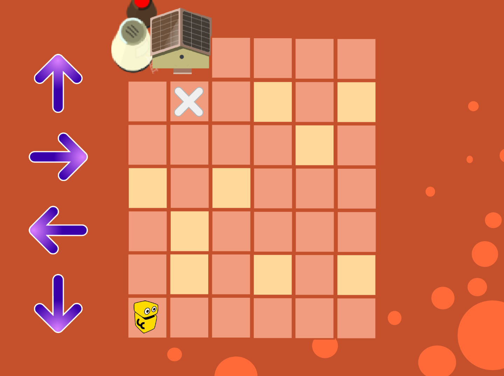

Ссылка на шаблон таблицы
Таблица представлена в ознакомительных целях. Чтобы использовать ее на занятиях нужно скопировать ее на свой диск или компьютер (подробнее читайте в разделе инструкций)
Мастер класс
Активность "Робот" для МК-онлайн (доработанная версия)
Здесь представлен вариант Активности "Робот".
Робот программируется при помощи специального шифра. Алгоритм в данном случае собирается набором цифр от 1 до 4 (смотрите инструкции в самой активности)
Шифр нужно набирать последовательно без пробелов и без посторонних символов и знаков. Объясните это обязательно перед тем как будете проводить эту активность

ОБРАТНАЯ СВЯЗЬ ПОСЛЕ МАСТЕР КЛАССА:
Моменты, которые нужно указать по каждому ребенку
ВП, ГД:
1. Уровень логики
2. В каком темпе выполнял задания
3. Тянет ли курс. Если не тянет, посоветовать другой курс
4. Был ли опыт программирования
5. Впечатление ребёнка от МК
6. Отметить лучшего ученика в группе
7. Были ли проблемы с интернетом

Примеры выполнения проектных работ
Здесь и далее будут представлены наглядные способы выполнения проектных работ
Рекомендуется демонстрировать их на экране.
Не рекомендуется отправлять ссылки на проекты детям.
Весь дополнительный материал предназдачен для демонстации и объяснения материала.
Не обязательно выполнение проектов точно по образцу. С требованиями к выполнению проектов смотрите в таблице по проектным работам
ДЛЯ ЗАПУСКА НАЖМИТЕ КНОПКУ "PLAY" в правом верхнем углу
Проект "Мультфильм. Высадка на Марс"
Пример проекта мультфильм. Можно разобрать с достаточно сильной группой, с которой можно пройти дополнительный блок команд "Текст в речь". В компьютере должен быть включен звук.
ДЛЯ ЗАПУСКА НАЖМИТЕ КНОПКУ "PLAY" в правом верхнем углу
ЖМИ НА КАРТИНКУ ВНИЗУ
Проект "Мультфильм. Марсоботик"
Пример проекта мультфильм. Можно разобрать с достаточно сильной группой, с которой можно пройти дополнительный блок команд "Текст в речь". В компьютере должен быть включен звук.
ДЛЯ ЗАПУСКА НАЖМИТЕ КНОПКУ "PLAY" в правом верхнем углу
ЖМИ НА КАРТИНКУ ВНИЗУ
Проект "Голосовой Ассистент" (Чат-бот)
Пример проекта Чат-бот. Можно разобрать с достаточно сильной группой, с которой можно пройти дополнительные блоки команд. В компьютере должен быть включен звук
ДЛЯ ЗАПУСКА НАЖМИТЕ КНОПКУ "PLAY" в правом верхнем углу
ЖМИ НА КАРТИНКУ ВНИЗУ
Дополнительные картинки с подсказками по кодам для проекта "Чат-бот"
Пример проектных работ для младших (слабых) групп:
1.
2.
3.
4.
Пример проектных работ для сильных групп:
1.
2.
3.
4. 
5. 
6.
7.
8. 
Решебник задач из тетрадей
Здесь и далее будут представлены наглядные способы решения задач из тетрадей, которые чаще всего вызывают вопросы у учащихся.
Рекомендуется демонстрировать из на экране и решать вместе с ними.
Не рекомендуется отправлять ссылки на решебник и другие проекты детям.
Весь дополнительный материал предназдачен для демонстации и объяснения материала
ДЛЯ ЗАПУСКА НАЖМИТЕ КНОПКУ "PLAY" в правом верхнем углу
1-модуль
Пока нет заданий
3-модуль
Задание 7
Кахуты по курсу Визуальное программирование
Модуль-1. Введение
М1У1 Линейный алгоритм
М1У2 Циклы
М1У3 Начальная расстановка
М1У4 События
М1У5 Проект. Визитка (в разработке)
Модуль-2. Пространство
М2У1 Координаты
М2У2 Повороты в направлении
М2У3 Вращение и градусы
М2У4 Сообщения
М2У5 Проект. Мультфильм
Модуль-3. Игра
М3У1 Условия и оператор выбора
М3У2 Изменение координат
М3У3 Процедуры
М3У4 Планирование игры
М3У5 Тестирование игр
М3У6 Презентация игр
Модуль-4. Логика
М4У1 Логические операторы И, ИЛИ, НЕ
М4У2 Цикл с условием
М4У3 Случайные числа и диапазон
М4У4 Области координат
М4У5 Групповой проект
М4У6 Групповой проект. Доработка и презентация (в разработке)
Модуль-5. Переменные
М5У1 Переменные в циклах
М5У2 Типы данных и операторы
М5У3 Переменные в играх
М5У4 Переменная как параметр
М5У5 Проект "Чат-бот"
М5У6 Финализация и презентация проекта
Модуль-6. Клоны
М6У1 Классы и объекты
М6У2 Локальные и глобальные переменные
М6У3 Подготовка к финальному проекту (в разработке)
Модуль-7. Выпускной
М7У1 Выпускной